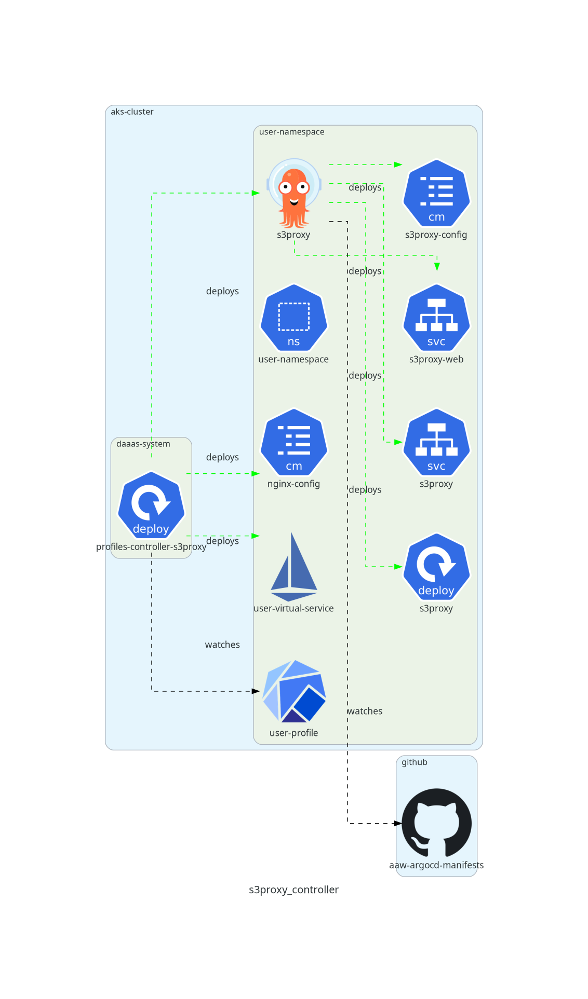
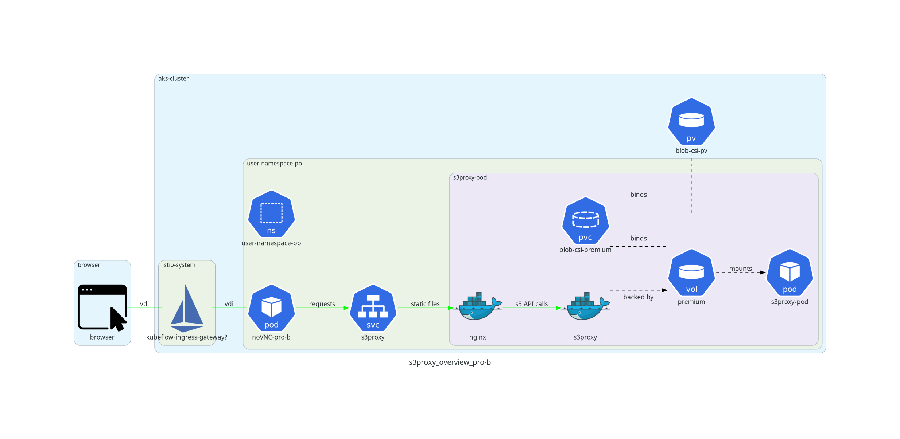

Overview
In order to provide users of the platform with an S3 interface, we use a fork of aws-js-s3-explorer in combination with s3proxy. s3Proxy runs in "filesystem" mode, where the filesystem volumes provided by the blob fuse CSI driver serve as a data back-end, while the aws-js-s3-explorer provides a client-side web application for users to explore the contents of their S3 buckets.
Relevant Repositories
Feature Deployment

The S3Proxy application is deployed on an opt-in basis to reduce resource consumption in the cluster. The majority of users only require filesystem access to Azure blob storage, which is already provided by the blob fuse CSI driver; it is only necessary to deploy this s3proxy application if users explicitly require an s3 interface to Azure blob storage.
To enable s3proxy in a namespace, go to the aaw-kubeflow-profiles repository, go to the specific *.jsonnet file that contains the profile definition, then wrap the profile definition in the addS3 function. See this example for a profile where both s3proxy and Gitea were added to the namespace.
If the user profile has the label s3.statcan.gc.ca/enabled: true, then the s3proxy profiles controller will install an ArgoCD application, an nginx configmap, and an Istio virtual service into the user's namespace. The ArgoCD application deploys a number of resources to the user's namespace via jsonnet. The ArgoCD location watches the /profiles-argocd-system/template/s3proxy location of the aaw-argocd-manifests repo for changes to the aaw-dev-cc-00 or aaw-prod-cc-00 branches for the dev and prod deployments, respectively.
Note: there are two network policies deployed by the per-namespace ArgoCD application (manifests can be found in the application.jsonnet file at the repo location linked above). These network policies are required in order to allow users to connect to the protected-b s3proxy instance from a noVNC protected-b notebook.
Feature Implementation
The way users connect to the s3 explorer depends on whether they are working in an unclassified environment or a protected-b environment. In an unclassified environment, the architecture is as shown in the figure below.

Users connect to s3proxy through the Kubeflow user interface, and the s3proxy web application renders inside of an iframe in the Kubeflow User interface.
All outgoing requests from the page are intercepted by a service worker - a client-side middleware that can intercept and modify outgoing requests before they are sent to the server.
An Istio virtual service applies routing logic to incoming requests based on uri prefix patterns and request headers. Requests are directed towards the s3proxy-web service, which routes requests to s3proxy pods.
Inside of s3proxy pods, there is an nginx container that hosts the static files associated with the aws-js-s3-explorer, and also proxies requests for s3proxy.
The s3proxy application runs in "filesystem" mode, so all s3 API calls made against s3proxy are translated into the appropriate system call to perform operations against the filesystem. In particular, each bucket provided by s3proxy is a volume that is mounted to the s3proxy container filesystem by the blob fuse CSI driver.
In a protected B environment, user access is slightly different as shown in the diagram below.

Unlike the unclassified setup, users cannot access the aws-js-s3-explorer user interface through the Kubeflow interface. Rather, users can only access the aws-js-s3-explorer application through a browser in a noVNC notebook.
Under this setup, users have a VDI connection to their noVNC notebook, so neither the service worker nor the virtual service configuration are applicable; rather, the noVNC pod makes requests directly against the s3proxy-web service in the same namespace.
Service Worker Explanation
As far as we can tell, the AWS client used by aws-js-s3-explorer does not allow for unauthenticated requests. In other words, the client requires an access key/secret key pair. The AWS javascript client automatically generates a corresponding authorization request header for all AJAX calls made by the application.
Since each namespace has its own private s3proxy instance, and users accessing Kubeflow have already authenticated, it would be redundant to have an additional authentication layer in front of s3proxy.
To get around this upstream requirement, a fake access key/secret key are created on the client side so that the aws javascript client can successfully make requests, and each user's private s3proxy instance runs with no authentication required.
The workaround described above is sufficient for users accessing s3-proxy through the noVNC pod since the request is made in the cluster. However, users accessing the aws-s3-js-explorer through the Kubeflow interface pass through an authenticated ingress gateway. When requests enter through this gateway, they are rejected due to the erroneous authorization header. To avoid significantly refactoring the aws-js-s3-explorer code, a service worker intercepts requests and removes the erroneous authorization header.
There are 4 cases that occur in the fetch listener of the sw_modify_header.js service worker.
Case 1: do not modify requests that are not directed to s3proxy
Endpoints with prefixes other than /unclassified are not AJAX calls made by the AWS s3 client, and do not have the erroneous authorization header. All such requests are simply forwarded by the service worker without any modification.
Case 2: remove auth header in requests with methods other than PUT and POST
AJAX calls that are not PUT or POST only need the erroneous authorization header removed (e.g. GET requests to list objects in a bucket, DELETE request to remove an object, etc.). No further action is required, so the modified request is forwarded to s3proxy.
Case 3: remove auth header and create .empty file if a new folder is being created
Any PUT requests with a URI that ends with / are requests to create a new folder. As the concept of folder doesn't exist in s3, requests of this type are intercepted and an empty file called .empty is attached to the request so that the prefix pattern is preserved. For example, a request to create a folder called new-folder in the unclassified bucket would have a request with the prefix /unclassified/new-folder/, so the service worker would intercept this request and send the request /unclassified/new-folder/.empty so that the user can add files to the new location.
Case 4: remove auth header and forward request body to s3proxy
In the final case, there is a PUT or POST request to upload a file to s3proxy. In this case, the service worker creates an ArrayBuffer object for the request body data and passes the request onto s3proxy. This last case is required because the body of PUT and POST requests is not included in the event.request object that the service worker receives, so the request body must be loaded into a transferrable object before being sent to s3proxy.
Request Routing
An istio virtual service and nginx configuration are used to ensure that requests from the Kubeflow user interface arrive correctly at the Nginx/s3proxy servers. This section details how the virtual service / nginx configuration modify requests.
(1) Getting the index.html page
A request is sent from the page https://kubeflow.aaw.cloud.statcan.ca/s3/?ns=<user namespace> (i.e. the referer header is https://kubeflow.aaw.cloud.statcan.ca/s3/?ns=<user namespace>). The istio virtual service in the user's namespace has a routing rule for requests with this referer header, and redirects the request to the uri /s3/aaw-fc/index.html. Another route rule catches requests with the URI prefix /s3/aaw-fc/ and routes them to s3proxy-web.<user namespace>.svc.cluster.local. The index.html file is returned and the base URL of the page is https://kubeflow.aaw.cloud.statcan.ca/s3/<user namespace>/ (i.e. all requests initiated from the index.html page will be addressed to https://kubeflow.aaw.cloud.statcan.ca/s3/<user namespace>/ followed by the path to the static file being requested).
(2) Getting the static files (application and vendor)
Since the static files need to be accessible from a protected-b noVNC notebook without internet access, all static files are served from the Nginx static file server. The Dockerfile in the aws-js-s3-explorer repository copies all of the static files (application and vendor) to a location on the container filesystem. The s3proxy pod contains an init job that copies the static files from the s3proxy image to a known location on the Nginx container file system so they can be served from the Nginx container. All static files contain the prefix /s3/aaw-fc/ (see explanation in (1)), so the same virtual service route that routes the request for index.html to s3proxy-web.<user namespace>.svc.cluster.local routes the requests for all static files to this service.
(3) AJAX requests initiated from AWS client
The AWS javascript client is unaware of the /s3/aaw-fc/ prefix that was added to the requests for static files. As such, it initiates requests of the form https://kubeflow.aaw.cloud.statcan.ca/<bucket name>/<object prefix>, which does not have enough information on its own to route the request to a specific user's namespace. However, since all outgoing requests are caught by the service worker, the referer for outgoing AJAX calls is https://kubeflow.aaw.cloud.statcan.ca/s3/<user namespace>/sw_modify_header.js, which can be used to route the AJAX requests to the correct user's s3proxy.<user namespace>.svc.cluster.local service.
(4) Downloading files from aws-js-s3-explorer
If a user tries to download a file by clicking one of the links in the aws-js-s3-explorer, the referer url is https://kubeflow.aaw-dev.cloud.statcan.ca/s3/aaw-fc/index.html instead of https://kubeflow.aaw.cloud.statcan.ca/s3/<user namespace>/sw_modify_header.js since we forward the existing request instead of initiating a new request from the service worker. In this case, the request is also directed to the user's s3proxy.<user namespace>.svc.cluster.local service, and the file will be downloaded to the user's browser.